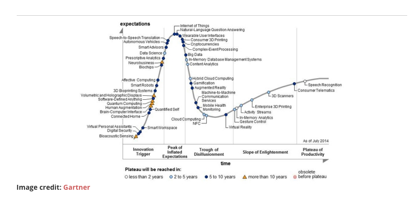

Big Data Revisited:
Checking Today's Big Data Pulse
wesleyreisz.com
big-data-revisited.appspot.com
github.com/wesreisz/Big-Data-Revisited
@wesreisz
Do you remember when...
Apparel
-
IoT Estimates...
- 4.9 Billion Connected "Things" Will Be in Use in 2015...
- 25 Billion Connected "Things" Will Be in Use by 2020...
- That's alot of things!!!
(http://www.gartner.com/newsroom/id/2905717)
But Wait there's more...


What does IoT have to do with Big Data?
- Volume
- Velocity
- Variety
Big Data Job Trends
Data Science

Hype Cycle for Emerging Technology 2014
Let's do a quick Review of the
Key Components of Big Data.
- Hadoop
- HDFS
- MapReduce
Let's do a quick Review of the
Key Components of Big Data.
MapReduce: is a programming model for processing large data sets, and the name of an implementation of the model by Google. MapReduce is typically used to do distributed computing on clusters of computers.
Writing a parallel-executable program has proven over the years to be a very challenging task. MapReduce simples the process by requiring coders to write only the simpler Map() and Reduce() functions, which focus on the logic of the specific problem at hand, while the "MapReduce System" handles the marshalling of the distributed servers, running the various tasks in parallel, managing all communications and data transfers between the various parts of the system, providing for redundancy and failures, and overall management of the whole process.
HDFS Features
- Designed to store large files
- Fault tolerant and self-healing distributed file system
- Stores files as large blocks (64 to 128 MB)
- Each block stored on multiple servers
- Data is automatically re-replicated on need
- Accessed from command line, Java API, C API, and... C#
MapReduce Features
- Fine grained Map and Reduce tasks
- Improved load balancing
- Faster recovery from failed tasks
- Automatic re-execution on failure
- In a large cluster, some nodes are always slow or flaky
- Introduces long tails or failures in computation
- Framework re-executes failed tasks
- Locality optimizations
- With big data, bandwidth to data is a problem
- Map-Reduce + HDFS is a very effective solution
- Map-Reduce queries HDFS for locations of input data
- Map tasks are scheduled local to the inputs when possible
Let's think about this for a second...
Traditional Structure Data from our IT
Internet of Things (4.9 Billion)
+ Big Data ($125 Billion)
_______________________________________________________
But Wait...
Hype Cycle for Emerging Technology 2014
Key Challenges with Big Data
- Privacy is a Huge Concern
- Big data has moved from "cool experiments" toward a demand for integration with other production environments. Even large Hadoop clusters often remain isolated and organizations are now demanding "integrated" operations.
- Repeatability is the new demand in big data. Can use cases be broken down into components that are reused throughout multiple applications?
- Need for better self-service data preparation tools too accelerate the shift toward business-user-generated data discovery and advanced analytics
- Skills Remain an Important Inhibitor to companies:
“Spreadsheet tools are no longer good enough... Database experience is vital for CPAs in these cases. At our firm, we have invested in people with this experience and given them database training opportunities and encouraged obtaining certifications. Spreadsheet tool capabilities stop at around 1 million rows of data, which is powerful but not enough for a case like this one.”
- Tim Bryan, CPA/CFF/CITP, a forensic accounting and technology services senior manager at Crowe Horwath in Sacramento, Calif.
Curly Fry Conundrum
Michal Kosinski, David Stillwell, and Thore Graepel
Free School Lane, The Psychometrics Centre, University of Cambridge,
Cambridge CB2 3RQ United Kingdom; and Microsoft Research, Cambridge
https://www.youtube.com/watch?t=512&v=hgWie9dnssU
Turns Out
- The skillsets to understand Big Data results are not just IT
- A combination of business, IT, and even socialology and pyschology. As is the case, with Curly Fries and Homophily.
- Understand what the data is telling us
So What are the major Trends today?
Overall Trends in IT
- Mobility, Big Data, and Cloud continue (and will continue for the forseeable future) to be Overarching Themes in IT
- Niche:
- Open Sourcing of .NET
- JavaScript: JavaScript is Eating the Web
- Move to Microservices over Monoliths
- Lighter tends to be better (Node.js/Embedded Web Containers)
- Linux Containers (Docker)
- Functional Programming
Overall Trends in Big Data

http://www.thoughtworks.com/radar
- SQL-on-Hadoop:
Data stored in Hadoop is commonly accessed using MapReduce. This API-based approach requires a programmer to write application code to execute tasks against a Hadoop cluster. While effective for data manipulation tasks like extraction, transformation and loading (ETL), this method has proven cumbersome for data exploration and business intelligence (BI). - Apache Kylin
- Facebook Presto
- Apache Drill
- Apache Spark:
Apache Spark has been steadily gaining ground as a fast and general engine for large-scale data processing. The engine is written in Scala and is well suited for applications that reuse a working set of data across multiple parallel operations. It’s designed to work as a standalone cluster or as part of Hadoop YARN cluster. - Case Study: Marketing Campaigns
https://databricks.com/wp-content/uploads/2015/04/Databricks_Case_Study_Radius.pdf)
- H2O:
Predictive analytics are used in more and more products, often directly in end-user facing functionality. H2O is an interesting new open source package (with a startup behind it) that makes predictive analytics accessible to project teams due to its easy-to-use user interface. At the same time it integrates with the data scientists’ favourite tools, R and Python, as well as Hadoop and Spark. It offers great performance and, in our experience, easy integration at runtime, especially on JVM-based platforms. - H2O brings better algorithms to Big Data.
- Case Study: Fraud Detection
http://0xdata.com/use-cases/fraud-detection
How Can you Use Some of these Toolks in your Classroom or your research?
- Traditional RDMS (such as SQL Server)
- On-Prem Install (I'm partial to Cloudera)
- AWS:
- EC2: IaaS
- Kinesis: Real-time Processing of Streaming Big Data
- Data Pipeline*: Orchestration for Data-Driven Workflows
- Microsoft Azure:
- Azure: IaaS
- HDInsight: Real-time Processing of Streaming Big Data
- HDInsight Emulator
- Research:
http://research.microsoft.com/en-us/projects/azure/default.aspx
Microsoft Azure PASS:
https://www.microsoftazurepass.com/azureu
Let's Review
- Who
- What
- Where
- Why
- How
References
- Cool Vendors in Big Data, 2015 http://www.gartner.com/document/3033817
- Thoughtworks Techradar http://www.thoughtworks.com/radar
- Maverick Research: How Big Data Causes Business Meltdown http://www.gartner.com/document/2856517
- Hype Cycle for Big Data, 2014: http://www.gartner.com/document/2814517
- Big Data Cited as Top Issue for Some CPAs ttp://www.accountingweb.com/article/big-data-cited-top-issue-some-cpas/223648
- Big Data case study: What forensic accountants need to know http://journalofaccountancy.com/issues/2015/mar/forensic-accounting-big-data-case-study.html
- Curly Fry Connundrum https://www.youtube.com/watch?t=512&v=hgWie9dnssU
- http://www.pnas.org/content/110/15/5802.full.pdf
- Why Supply Chain Leaders Are Using Big Data Analytics http://www.industryweek.com/supply-chain-big-data
- The Michael J. Fox Foundation and Intel Join Forces to Improve Parkinson's Disease Monitoring and Treatment through Advanced Technologies: http://newsroom.intel.com/community/intel_newsroom/blog/2014/08/13/the-michael-j-fox-foundation-and-intel-join-forces-to-improve-parkinsons-disease-monitoring-and-treatment-through-advanced-technologies
Thank You!
Big Data Revisited: Checking Today's Big Data Pulse
wesleyreisz.com
big-data-revisited.appspot.com
github.com/wesreisz/Big-Data-Revisited
@wesreisz